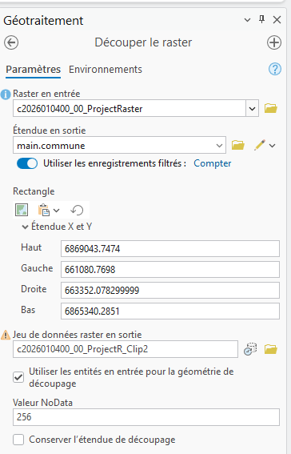
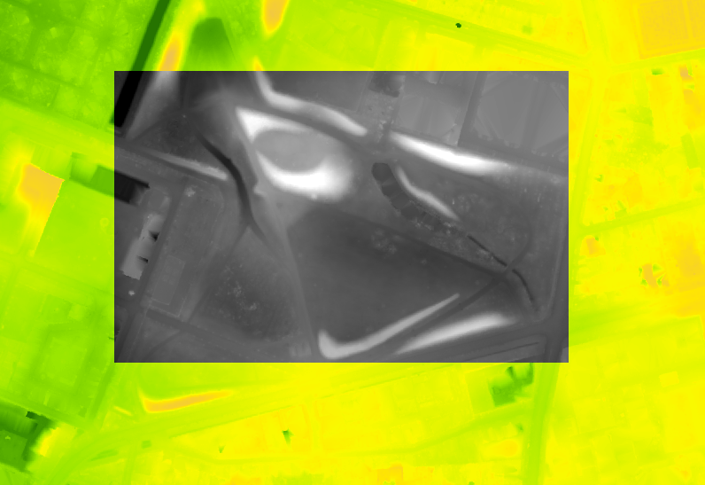
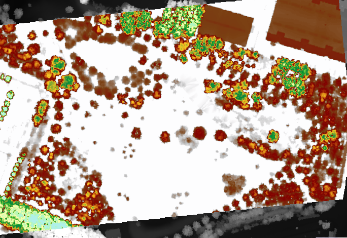
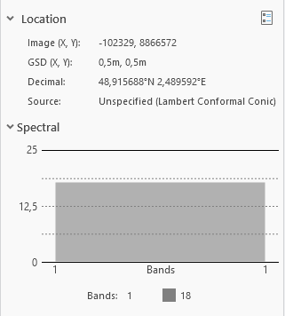
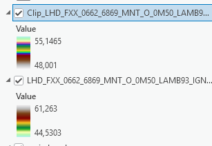
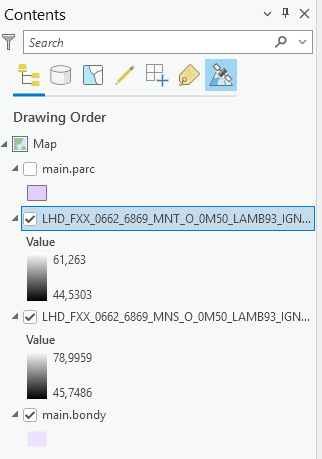

Code
dir("data/cours5/", pattern = "tif$")Les images Sentinel de Copernicus Hub sont faciles d’accès et permettent d’évaluer les changements récents.
Pour le MNS et le MNT, la campagne LIDAR de l’IGN qui se termine actuellement a permis de récupérer des données beaucoup plus précises.
Le cours portera sur l’exploitation de cette donnée raster plus spécifique l’élévation. Nous explorerons la donnée, après l’avoir coupée, en la visualisant avec différentes symbologies.
Nous aborderons ensuite les opérations mathématiques simples possibles permises par la structure en raster.
Enfin, comme pour le 1er cours sur le raster, nous essaierons de construire une chaîne de géotraitement plutôt que d’explorer chaque outil un par un.
Le mieux est de repérer les zones et de chercher les dalles sur cartes.gouv.fr. 2 liens utiles :
Pour Bondy, par rapport aux zones de carreaux manquants, 2 zones concernées
dir("data/cours5/", pattern = "tif$")pour la ZAC (0661 / 6868)
library(terra)
mnt <- rast("data/cours5/LHD_FXX_0661_6868_MNT_O_0M50_LAMB93_IGN69.tif")
plot(mnt)
mns <- rast("data/cours5/LHD_FXX_0661_6868_MNS_O_0M50_LAMB93_IGN69.tif")
plot(mns)
mnh <- mns-mntpour le parc (0662 / 6869)
D’après le nom du fichier, quelle est la précision ?
Charger les 2 dalles
Observer le poids
A t on besoin de reprojeter ?
Explorer le menu imagerie / processus et raster functions, quelle est la différence ?

Les carreaux sont en multipolygone, il faut les éclater en forçant le format polygone afin de retenir uniquement le carreau de la ZAC. C’est la commande disagg
library(terra)
car <- vect("data/cours5.gpkg", "bondy")
car <- disagg(car)
# aire de chq carreau en hac
a <- round(expanse(car)/10000,0)
plot(car)
text(car, labels=a)
# on coupe le carreau 4
zac <- crop(mnh, car [4])
# parc <- crop(mnh, car [1])plot(zac)clic droit au niveau de la fenêtre contenu / symbologie
Rechercher la palette élévation dans le mode continu
Observer les différences avec l’image de départ



Prendre les arbres ou les bâtiments, trouver une fourchette de hauteurs.

Utiliser l’outil statistiques zonales
Refaire une symbologie

Voir la différence mnt, mns et mnh
library(terra)
mnt <- rast("data/cours5/LHD_FXX_0661_6868_MNT_O_0M50_LAMB93_IGN69.tif")
plot(mnt)
mns <- rast("data/cours5/LHD_FXX_0661_6868_MNS_O_0M50_LAMB93_IGN69.tif")
plot(mns)mnh <- mns-mnt
plot(mnh)options(scipen = 999)
hist(mns, col="wheat", main= "MNS et MNT")
hist(mnt, add = T)
hist(mnh, main = "MNH")Il existe beaucoup d’outils, par exemple, pour un mnt, les outils traitant de la surface.

L’outil sert à construire les courbes de niveau, mais il sert à autre chose ci-dessous.
plot(zac)
contour(zac, col="red",add = T)
contour(zac, filled=T, nlevels = 5)Plus qu’une exploration exhaustive des outils existant, on cherche à raisonner sur une chaîne de traitement
Quel peut être la chaîne de géotraitement permettant de cartographier bâtiment et hauteur ?
Après avoir extrait la zone d’étude et construit un mnh, le traitement pourrait être le suivant :
classification sur la hauteur
OU densité de points
OU ré-échantillonner
seuillage (filtre)
tamisage (élimination des pixels isolés)
filtre morphologique : ajouter 2 pixels sur chaque ensemble de pixel
A chaque fois, il faut faire varier les paramètres pour voir si le résultat n’est pas plus intéressant.
Il s’agit d’isoler les pixels entre 1 et 4 m.
hist(zac)
reclassif <- matrix (c(-1,0,1,
1,4,2,
5,62,3),
ncol = 3,
byrow = TRUE)
zac2 <- classify(zac, rcl = reclassif)
pal <- c("blue", "white", "red")
plot(zac2, col = pal)Affichage de chaque couche
zac_by_class <- segregate(zac2, keep = T, other = NA, round=T)
plot(zac_by_class)Garder les pixels appartenant à la classe 2 uniquement
zac3 <- clamp(zac2, lower = 2 , upper= 2.1, values=TRUE)
plot(zac3)Il s’agit d’utiliser l’algorithme du kmeans qui permet de regrouper les pixels en fonction de leur valeur.
Transformation de la donnée en tableau de chiffres
df <- as.data.frame(zac, cell=T)
names(df)[2] <- "valeur"Algo
set.seed(99)
# centre des nuages de point
kmncluster <- kmeans(df[,-1], centers=10, iter.max = 500, nstart = 5, algorithm="Lloyd")
# on veut 10 clusters avec 500 iterations à partir de 5 pt au hasard
str(kmncluster)9 éléments
la taille de chq groupe varie (size)
Retour au format géométrique
On ajoute l’identification du cluster au pixel
kmr <- rast(zac, nlyr=1)
kmr [df$cell] <- kmncluster$cluster
kmrplot(zac, main = "Image de départ")
plot(kmr, main = "Classification non supervisée")L’idée est définir plus de classes quitte à les fusionner ensuite.
Assembler les pixels en diminuant la résolution
zaclowermodel <- zac2
res(zac2)
res(zaclowermodel) <- 1
zac4 <- resample(zac2, zaclowermodel, method = "near")Puis vectoriser
library(sf)
zac_poly <- as.polygons(zac4)
zac_poly <- st_as_sf(zac_poly)
zac_poly$cl <- zac_poly$LHD_FXX_0661_6868_MNS_O_0M50_LAMB93_IGN69
plot(zac_poly$geometry)Filtrer à nouveau sur la classe
zac_poly1 <- zac_poly [zac_poly$cl == 3,]
plot(zac_poly1$geometry)Les pixels sont plus gros, mais afin d’obtenir des polygones représentant des bâtiments, il faut agréger tous les petits polygones appartenant à la même classe.
agg <- aggregate(zac_poly1, by = list(zac_poly1$cl), length)
agg <- st_cast(agg, "POLYGON")
plot(agg$geometry, main = "Agrégation des polygones")Puis on mesure l’aire et on supprime les plus petits et le plus gros
agg$aire <- st_area(agg)
hist(agg$aire)library(units)
agg$aire <- drop_units(agg$aire)
agg <- agg [agg$aire > 150 & agg$aire < 1600,]plot(zac4)
plot(agg$geometry)simpli5 <- st_simplify(agg, dTolerance=5)
simpli10 <- st_simplify(agg, dTolerance=10)
plot(simpli5$geometry)
plot(simpli10$geometry)Comment récupérer la hauteur ?
Comment supprimer l’aire non construite ?